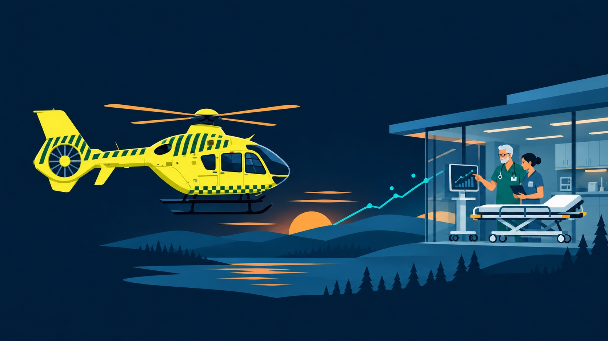
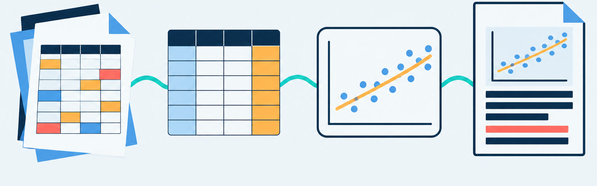

Käytännönläheinen R kliinikolle
Aineistosta kuvaajaksi ja raportiksi
Tervetuloa

Tämä on kurssin Käytännönläheinen R kliinikolle opetusaineisto. Kurssi on suunniteltu tutkimusta tekeville ensihoitajille, sairaanhoitajille ja lääkäreille.
Aiempaa ohjelmointikokemusta ei tarvita, mutta osallistujalla oletetaan olevan perusymmärrys tutkimuksen lukemisesta. Tavallisten kuvaajien tulkinnan tulisi olla tuttua, ja p-arvojen merkityksestä on hyvä olla käsitys.
Kirjaan kootaan sama sisältö kuin lähiopetuksessa: selitykset, koodit, kuvaajat ja harjoitukset. Voit käyttää sitä kurssin aikana muistin tukena tai opiskella sen avulla itsenäisesti kurssin jälkeen.

Kurssin rakenne
| Aihe | Tila | |
|---|---|---|
| Ennen kurssia | Asennukset ja ensimmäinen Quarto-dokumentti | julkaistu |
| Päivä 1 | Työympäristö ja kuvaajat (ggplot2) | aloita tästä |
| Päivä 2 | Aineiston siivoaminen, muokkaaminen ja yhdistäminen | tulossa |
| Päivä 3 | Aineiston kuvailu ja ryhmien vertailu | tulossa |
| Päivä 4 | Usean tekijän huomiointi ja logistinen regressio | tulossa |
| Päivä 5 | Koko analyysi alusta loppuun ja päivittyvä raportti | tulossa |
Päivän 1 koodiesimerkit ovat käytettävissä opetuksen aikana. Päivän ladattava koodi- ja tuloskooste julkaistaan opetuksen jälkeen. Luvut ja luentotallenteet lisätään myöhemmin. Päivien 2–5 sisältö on alustava ja tarkentuu kurssin edetessä.
Näin käytät kirjaa
- Kirjoita koodi itse. Lukemalla tunnistat koodin, kirjoittamalla opit tuottamaan sitä. Kopioi vain silloin, kun teksti niin neuvoo.
- Tee harjoitukset ennen ratkaisun avaamista. Jokaisessa harjoituksessa on vihje ja malliratkaisu, jotka aukeavat klikkaamalla.
- Katso video, jos teksti ei riitä. Lukujen alussa on luentotallenne, kun se on julkaistu.
- Hae. Sivupalkin hakukenttä etsii koko kirjasta, esimerkiksi funktion nimellä.
Aineisto
Esimerkeissä käytetään NHSRdatasets-paketin synteettistä sairaala-aineistoa (synthetic_news_data).
Tekijä
Anssi Saviluoto on akuuttilääketieteeseen erikoistuva lääkäri ja entinen ensihoitaja. Hän on tehnyt lääkärihelikopteritoiminnan (HEMS) tutkimusta vuodesta 2018 ja väitellyt vuonna 2021 ensihoitolääkäreiden toimenpidefrekvensseistä. R:n hän on opetellut omaa tutkimustaan varten.
Kurssi on kliinikon käytännön työkalupakki, ei tilastotieteen kurssi. Painopiste on menetelmien käytössä R:llä, ja tilastollisten menetelmien valintaa käsitellään suppeasti. Kun oikean menetelmän valinta on ratkaisevaa, ota biostatistikko mukaan jo tutkimuksen suunnitteluvaiheessa.